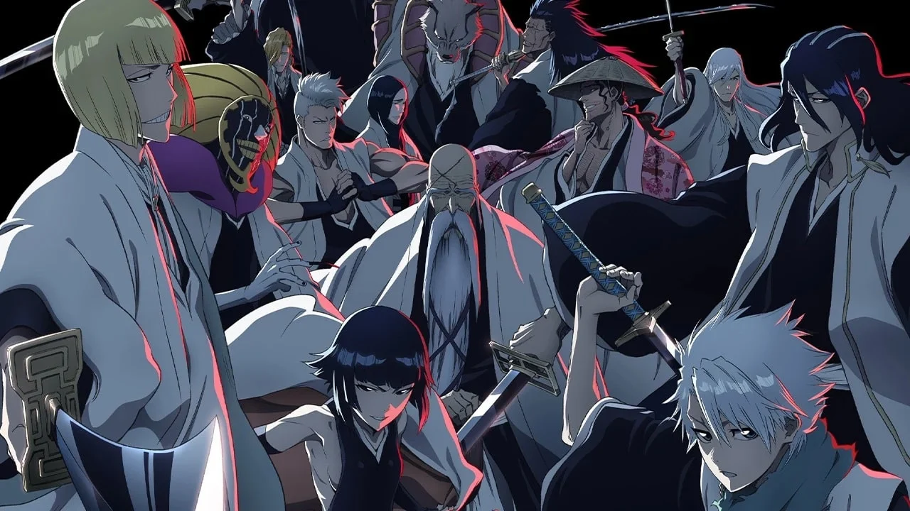
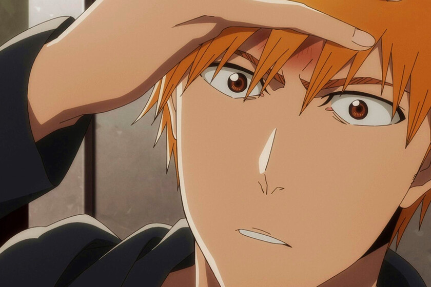
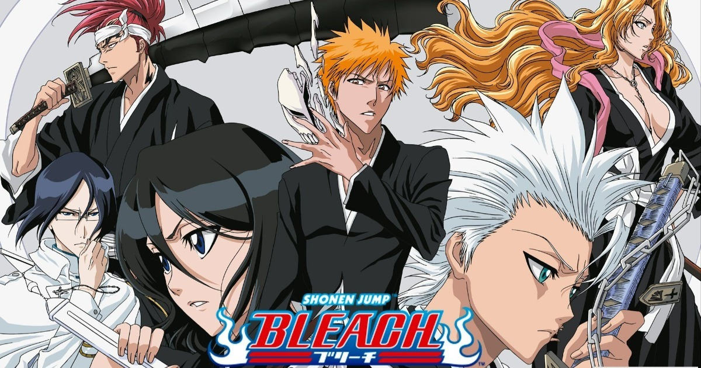

Historia
Introducción
La historia de Bleach, creada por Tite Kubo, sigue las aventuras de Ichigo Kurosaki, un joven que se convierte en Shinigami tras un encuentro con Rukia Kuchiki. Su viaje está lleno de desafíos, secretos y batallas que determinan el destino del mundo espiritual y el humano.
Inicios de Ichigo Kurosaki
Ichigo, un adolescente que puede ver espíritus, se ve envuelto en el mundo de los Shinigami después de salvar a su familia de un Hollow. Rukia, la Shinigami que le otorga sus poderes, se convierte en su guía mientras Ichigo aprende a combatir a los Hollows y proteger a las almas perdidas.
Arco de la Sociedad de Almas
Después de obtener sus poderes, Ichigo y sus amigos deciden infiltrarse en la Sociedad de Almas para rescatar a Rukia, quien ha sido condenada a muerte por violar las leyes de su mundo. Este arco introduce a personajes clave como Byakuya Kuchiki, el hermano de Rukia, y el capitán Aizen, quien desempeña un papel crucial en la trama.
La llegada de los Arrancar
Tras el rescate de Rukia, los Arrancar, seres que son tanto Hollow como Shinigami, se convierten en una nueva amenaza. El ex-capitán Aizen busca apoderarse de la Hōgyoku, un objeto que le permite aumentar su poder. Ichigo y sus amigos deben enfrentar a estos poderosos enemigos mientras desvelan las verdaderas intenciones de Aizen.

El conflicto con los Quincy
En el arco final, "Thousand-Year Blood War", se revela la historia de los Quincy y su conflicto milenario con los Shinigami. Ichigo debe enfrentar a Yhwach, el rey de los Quincy, mientras descubre más sobre su propio linaje y el verdadero poder que posee. La batalla final entre los Shinigami y los Quincy pone en juego el destino de ambos mundos.

“La muerte es solo el comienzo de una nueva vida. Cada batalla nos acerca más a nuestro destino.” - Tite Kubo
Legado de Bleach
A lo largo de los años, Bleach ha dejado una marca indeleble en la cultura del anime y manga, influyendo en muchas obras posteriores. Su mezcla de acción, drama y exploración de temas espirituales ha resonado con millones de fanáticos alrededor del mundo. La serie continúa siendo relevante con nuevas adaptaciones y un legado que perdura.